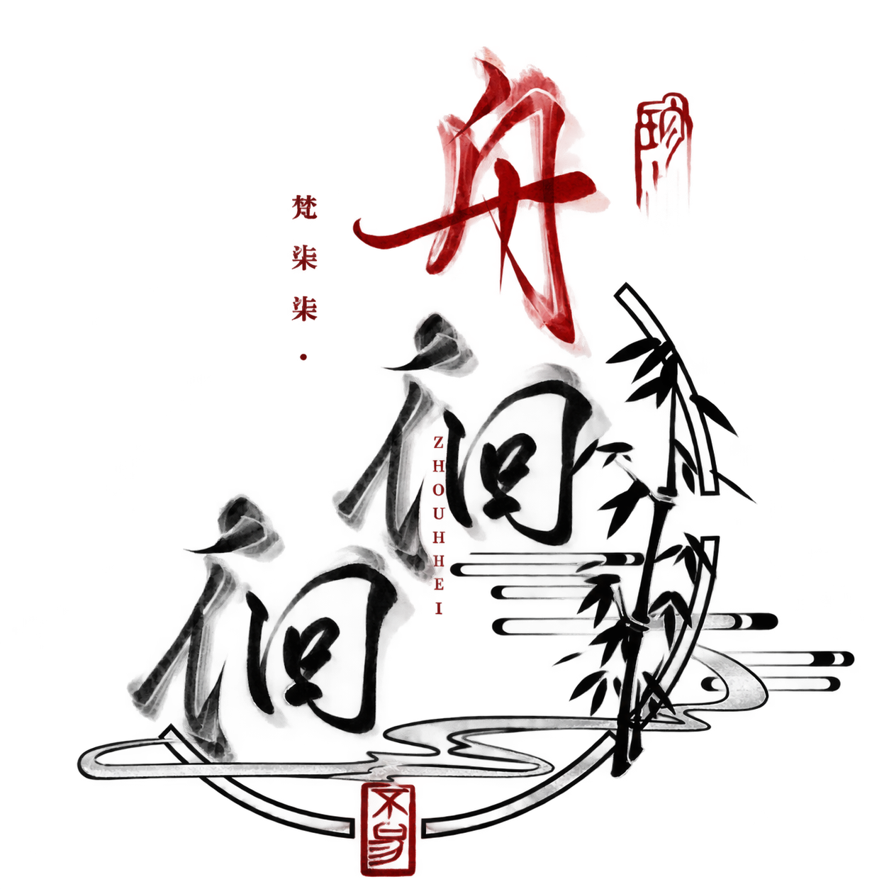

近日手记
刚刚学会的事
从一个空白文件开始，亲手搭起自己的网页。原来所谓江湖，也可以由一行一行的字筑成。
翻到下一页
楼影沉在水里，花枝从檐角探出来。花瓣和金屑偶尔掠过屏面。
卷一 · 自序
这里收留我路过人间时捡到的东西：好看的画面，突然想记下的句子，读过的书，今天新学会的事，以及一些会说话的小机关。
案头小集
近日手记
从一个空白文件开始，亲手搭起自己的网页。原来所谓江湖，也可以由一行一行的字筑成。
翻到下一页藏书阁
正在读的、读完舍不得合上的、只记住一句话的，都等我慢慢收进来。
三卷虚位以待
等下一本喜欢的书
今日习得
卷一 · 行迹
一些还没有被整理成作品的片段，先把它们留在这里。
剑尚在匣中，答案藏在雾里。
未完待续
下一次回来，也许添一页书单，也许挂一幅新画，也许再做一个能陪我聊天的 AI 小机关。